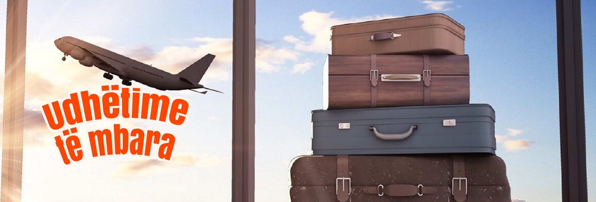
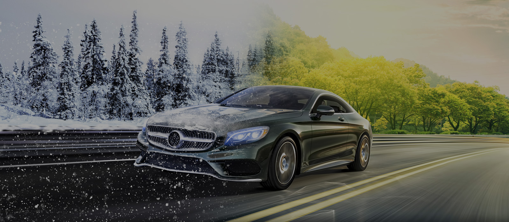
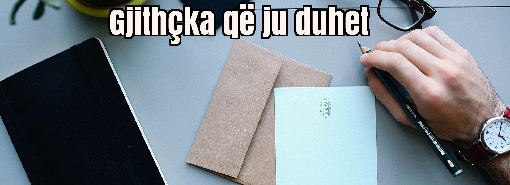
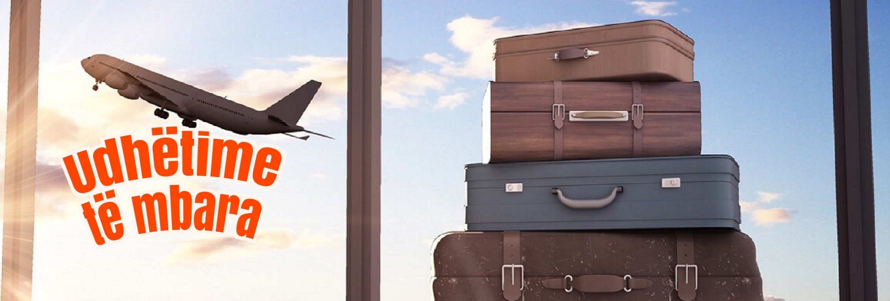
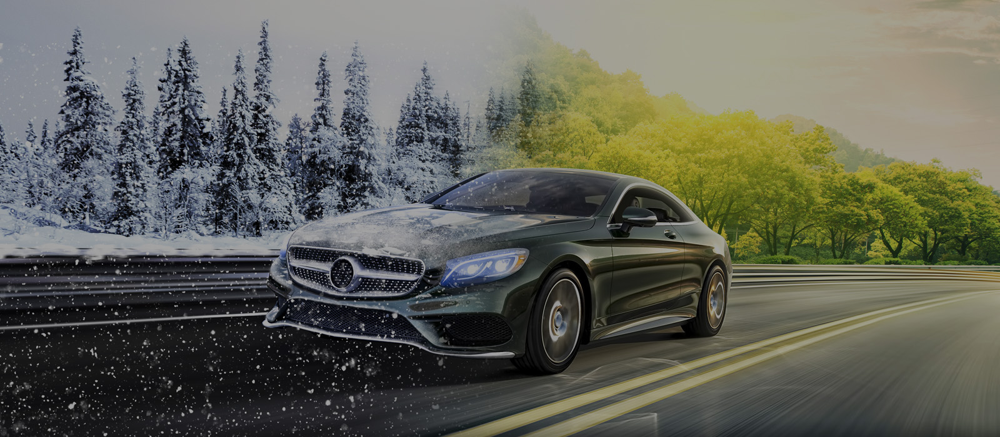
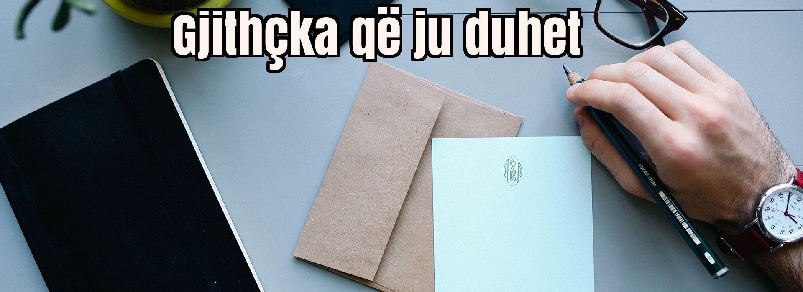
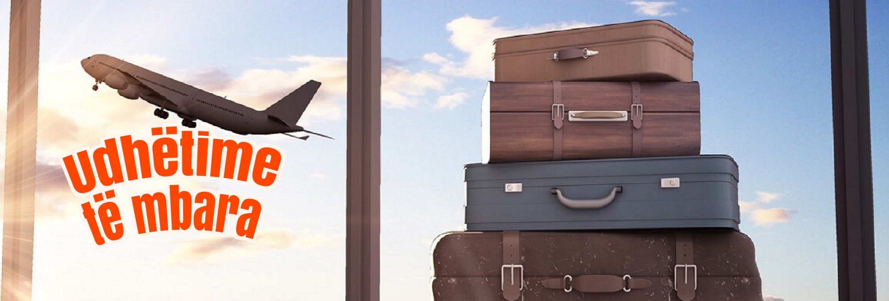
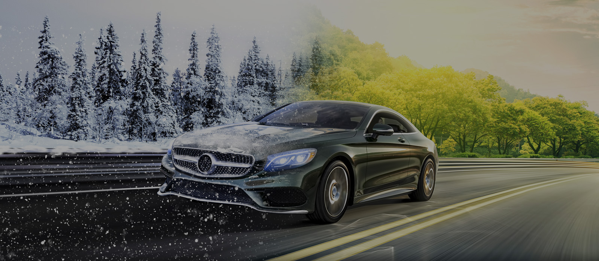
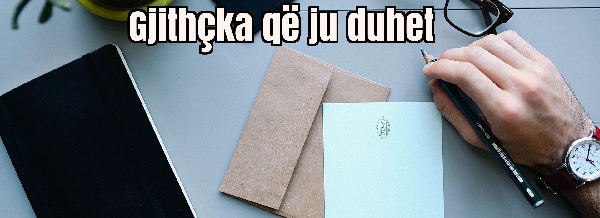
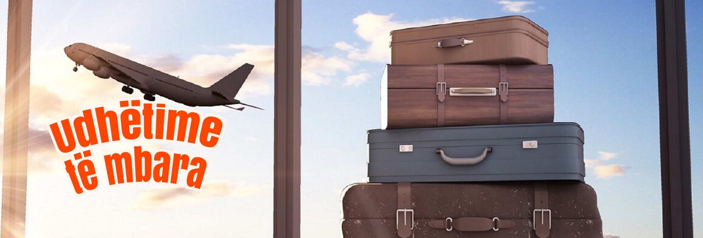
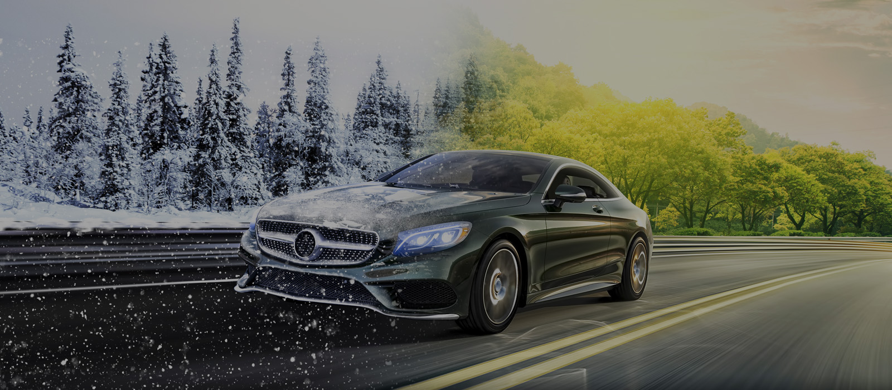
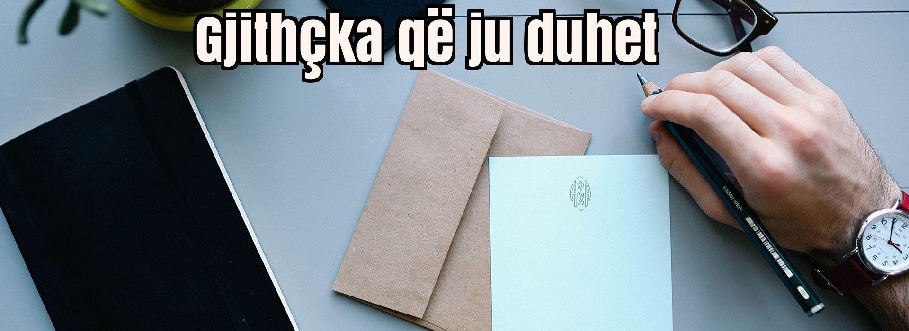
Në kohët e sotme automjeti është një nga investimet kryesore për Ju dhe Familjen Tuaj. Në rast se Ju jeni shkaktar i një aksidenti në komunikacion, sigurimi i detyrueshëm TPL nuk ofron dëmshperblim për automjetin tuaj, por vetëm për automjetin që ju keni dëmtuar. Për të ofruar një mbrojtje maksimale për cdo rast aksidenti dhe situate, PROSIG Interalbania Vienna Insurance Group Dega Kosovë Ju ofron sigurimin KASKO, i cili mbulon dëmtimet në automjetin Tuaj nga disa rreziqe si:
Mbrojtja e pasurisë tuaj, shtëpisë apo banesës si dhe pajisjeve, gjësendeve tuaja do të thotë siguri dhe mbrojtje financiare në rast të dëmit, respektivisht kompenzim financiar për dëmtimet fizike në pronën tuaj dhe rikthim në gjendjen paraprake të pronës deri në maksimumin e paraparë me kushtet e përgjithshme nga plani i juaj i sigurimit të pronë.
Çdo pasuri e juaja është simbol jo vetëm i ëndrrave Tuaja, por dhe investimit të realizuar me shumë mundim. Shtëpia, Hoteli, Restoranti, Biznesi Juaj janë simboli i shumë viteve pune. Kjo është aryeja pse Ju duhet të mendoni për një mbrojtje maksimale nga rreziqet e ndryshme. Jo vetëm zjarri, por edhe rreziqe të tjera natyrore mund ta demtojnë biznesin ose shtëpinë tuaj.
Bazuar në standardet më të mira ndërkombëtare dhe lokale, PROSIG Interalbania Vienna Insurance Group Dega Kosovë ofron dëmshperblim për dëmtimin ose shkatërrimin e pasurisë së siguruar në mënyrë të papritur, të paparashikuar dhe aksidentale si pasojë e disa rreziqeve
Sigurim ideal për shëndetin tuaj në rast se ju keni planifikuar të vizitoni vendet e Bashkimit Europian apo cilit do vend tjetër në botë. Sigurimi i shëndetit në udhëtim do të ju mbulojë sigurimin e shëndetit gjatë qëndrimit tuaj jashtë vendit në rast të ndonjë sëmundje si dhe do të mbulojë maksimalisht deri në limitin e sigurimit tuaj PROSIG Interalbanian Vienna Insurance Group sh.a – Dega Kosove ofron plane sigurimi gjithëpërfshirëse si dhe te personalizuara per t’ju pershtatur nevojave dhe kerkesave tuaja për sigurimin e shëndetit në Grup.
Planet tona te sigurimit mbulojne